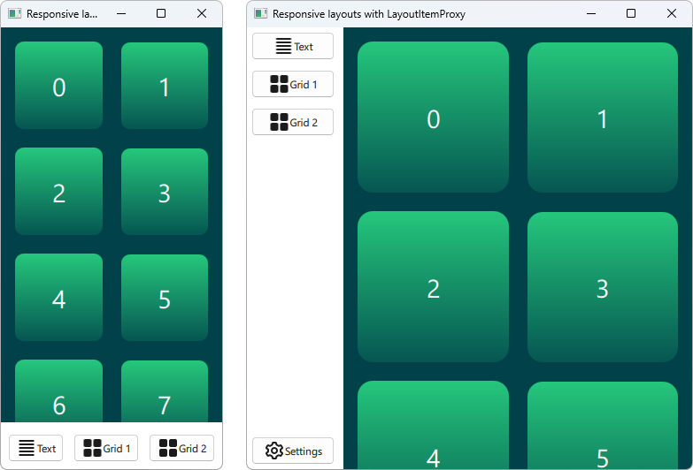

Qt Quick Responsive Layouts
Layouts are a good technique to make resizable user interfaces. However, this approach has its limitations as we cannot shrink and expand items limitless without sacrificing usability and aesthetics. At some point, it makes more sense to reorganize, remove or add certain elements. Adapting to different devices (e.g. phones and tables) and screen orientations (landscape or portrait) can be implemented similarly. This is what we usually understand as responsive layouts and Qt Quick Layouts provide various APIs to implement them.
Static hierarchy, adaptive layout
Layouts have a hierarchy, which is usually defined by the declarative QML code. For some simple responsive layouts, it is sufficient to keep the hierarchy unmodified and instead just tweak some of the properties that affect layouting.
Declarative description
The simplest approach to change layouting is to modify layout properties and Layout attached properties with small expressions. You can for instance use ternary operators in order to modify the layout depending on its width. Item properties, such as Item.visible, hiding or showing various parts of the interface, can be modified the same way.
In the following snippet, this concept is used to change a two-column layout into a single-column layout if the window width is smaller than a certain value.
GridLayout { columns: width < 300 ? 1 : 2 anchors.fill: parent Rectangle { id: rectangle1 color: "tomato" Layout.fillHeight: true Layout.fillWidth: true } Rectangle { id: rectangle2 color: "lightskyblue" Layout.fillHeight: true Layout.fillWidth: true } }
The resulting layouts look like this, depending on the width of the window.

Various levels of layouts and items can be nested but Items can only be moved within a their Item.parent.
States
The same result can be achieved with Qt Quick States. The upside of using states is that the Layout properties for a specific layout are collected at a single point in the QML file (at least the changing ones). The previously shown example can be implemented as follows and the result looks and behaves the exact same.
GridLayout { anchors.fill: parent Rectangle { id: rectangle1 color: "tomato" Layout.fillHeight: true Layout.fillWidth: true } Rectangle { id: rectangle2 color: "lightskyblue" Layout.fillHeight: true Layout.fillWidth: true } states: [ State { when: width < 300 PropertyChanges { target: rectangle2; Layout.row: 1 } PropertyChanges { target: rectangle2; Layout.column: 0 } }, State { when: width >= 300 PropertyChanges { target: rectangle2; Layout.row: 0 } PropertyChanges { target: rectangle2; Layout.column: 1 } } ] }
LayoutItemProxy
A third approach is the application of the LayoutItemProxy. The implementation of the previously shown minimalistic example can be found in the type documentation. In contrast to previously shown solutions, the LayoutItemProxy enables the declaration of completely separate layouts for various form factors. Especially with more complex layouts this might be useful to improve and maintain a reasonable source code structure.
Note, that the LayoutItemProxy API is a technical preview and might be subject to change or removal in future Qt versions.
Adaptive hierarchy, adaptive layout
More complex reconstructions of the layout might require changes to the hierarchy. A small stand-alone button in a small layout might be combined with other buttons and put into a box of a larger layout. An item that is fully visible in one layout, might require a Flickable in another, smaller layout. In this scenario, it is best to rely on the LayoutItemProxy. The LayoutItemProxy allows to move Items across various hierarchy levels and between different Item.parent.
The Qt Quick Layouts - Responsive Layout Example shows a case where an item is moved between different hierarchy levels, put into a Flickable in one case and on the top level in another layout. The two resulting layouts look as follows.

Useful links: Consult your design guidelines
Many design guidelines offer help and tips to create responsive layouts. Implementing the respective techniques is possible with the APIs mentioned above. For further information we recommend the following links: